This document explains how to use the MPLAB Code Configurator(MCC) framework to add BLE Virtual Sniffer system service component for capturing the HCI packets and feed it to the sniffer tool for debugging purposes.
Introduction
The BLE Virtual Sniffer uses BLE LOG middleware available as part of BLE Stack (BLE stack dependency) for restructuring of the HCI protocol packets. The BLE Virtual Sniffer has dependency of UART(To Output the HCI packet) which can be satisfied through Harmony CONSOLE system services.
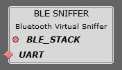
Hardware Required
Table 1. | Tool |
Qty |
|---|
| WBZ451Curiosity Board |
1 |
| Micro USB cable |
1 |
Developing an Application with BLE SNIFFER component using MPLAB Code Configurator(MCC)
This section explains the steps required by a user to integrate and use the BLE Virtual Sniffer component into any application.
Tip: New users of MPLAB Code Configurator (MCC) are recommended to go through the overview of MCC. Users can add/remove different components like peripheral support and other wireless functionality by following steps mentioned here.
- 1.Create a new MCC Harmony Project -- link for instructions
- 2.Ensure that wireless_system_pic32cxbz2_wbz45 repo is available locally in the development repo.
- 3.Open MCC. The Wireless System Service components will be displayed in available Device Resources --> Wireless --> System Services as shown in the below figure.
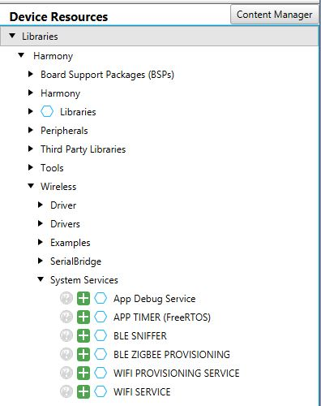
- 4.
Drag BLE SNIFFER component from Device Resources to project graph area and accept all Dependencies or satisfiers(auto-activation components), select "Yes".
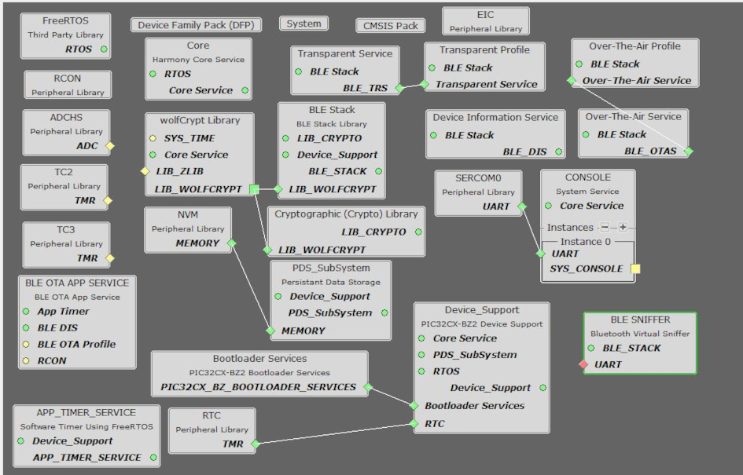
- 5.BLE SNIFFER will automatically enable the BLE LOG FEATURE(Enable BLE Log option) inside Ble stack as shown in the figure.
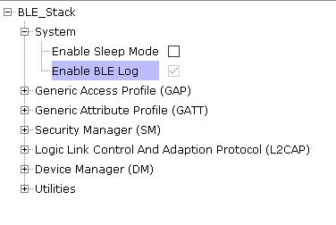
- 6.Connect the BLE SNIFFER with one of instances of SERCOM to satisfy the "UART" dependency of BLE SNIFFER.
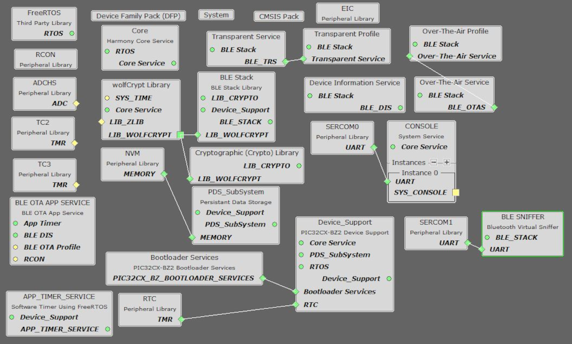
- 7.Ensure that the Transmit pinout and Receive pinout settings are configured properly inside SERCOM plib configuration options as shown in the figure.
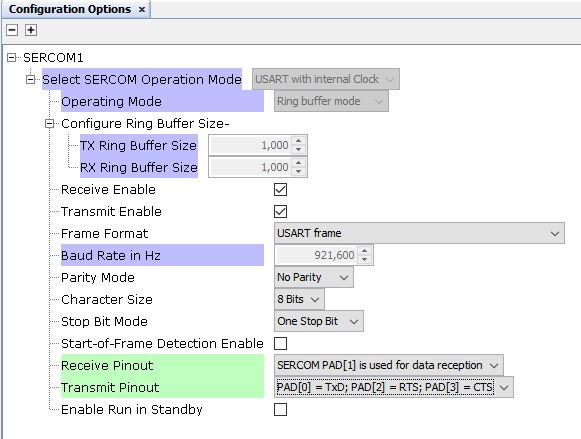
NOTE: Please refer device data sheet for pin and pad configurations.
- 8.Generate the code. Refer link for more details.
- 9.After generating the program source from MCC interface by clicking Generate Code, the BLE LOG application service can be found in the following project directories.
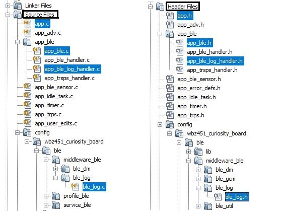
- 10.Compile and Run the project in WBZ45x device.
Capturing and Parsing the HCI Sniffer Packets through Microchip BLE Sniffer Tool
- 1.Make sure to install Wireless Protocol Suite.
- 2.open the WPS installed location and copy the following files as shown in the figure.
- 1.liveimport and LiveImportAPI.dll (available inside Executables->core as part of WPS installation).
- 2.Microchip_BLE_Sniffer_Tool (available in the link in software section).
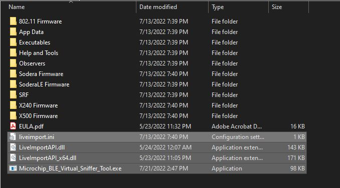
- 3. Open command prompt from the WPS installed location and run Microchip_BLE_Sniffer_Tool using the following command Microchip_BLE_Virtual_Sniffer_Tool.exe <"com_port"> <"Baud_Rate"> (eg: Microchip_BLE_Virtual_Sniffer_Tool 23 921600) as shown in the figure.
NOTE:It is recommended to Configure the Virtual sniffer SERCOM at highest Baud Rate(921600) and is fixed to 921600 for efficient usage of the sniffer.
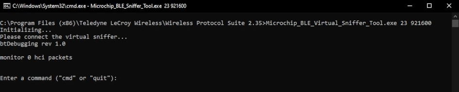
- 4.Open WPS tool and virtual sniffing data capture option in the startup page and start record as shown in the figure below.
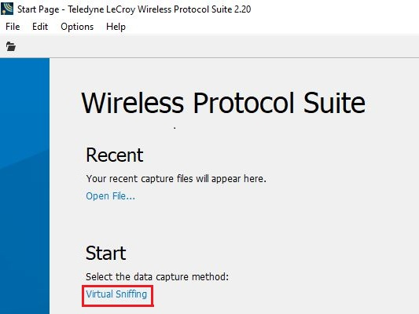
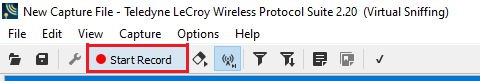
- 5.Reset the WBZ451 device and the captured packet will appear in WPS Tool and the total number HCI packets captured will be displayed in the Microchip_BLE_Sniffer_Tool command prompt as shown in the figure.
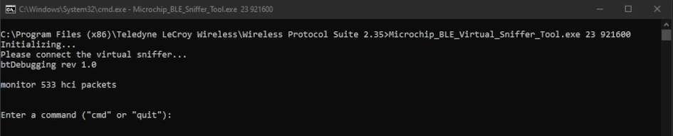
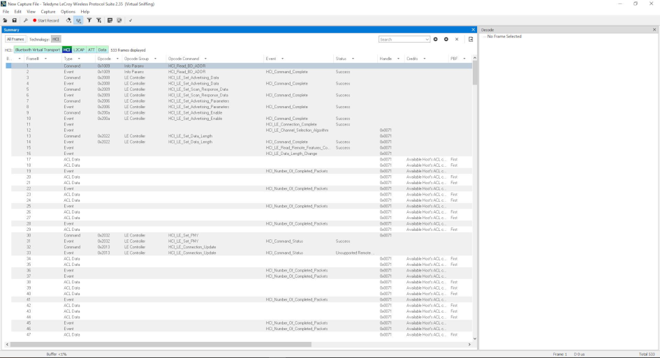